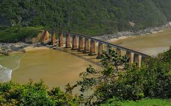
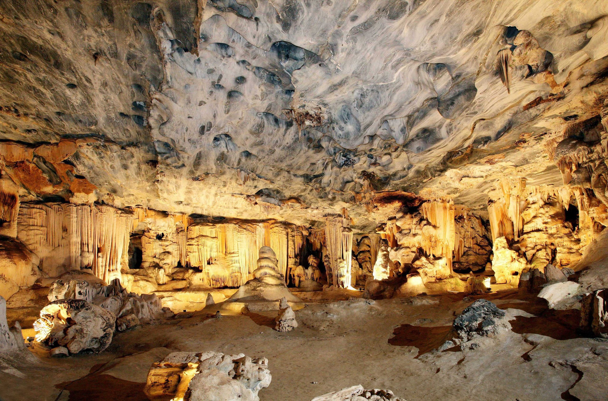
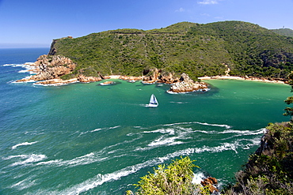
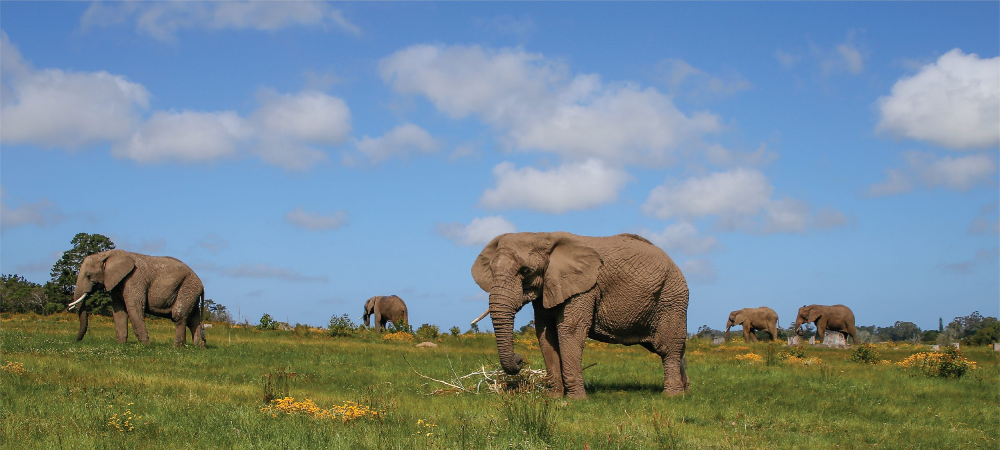

The Garden Route, a 190-mile (305 km) coastal stretch in South Africa's Western Cape, offers stunning scenery, from beaches and mountains to vineyards and fynbos. Enjoy whale watching in Knysna, wildlife safaris in Addo Elephant Park, and delicious food and wine in towns like Plettenberg Bay, George, and Mossel Bay.

Top three things to do in the Garden Route
Cango Caves

The Cango Caves, a popular tourist attraction in South Africa's Western Cape, are located near Oudtshoorn. These ancient limestone caves offer stunning formations and are a must-see for visitors to the region.
Knysna-Heads

The Knysna Heads are two iconic peninsulas separated by a narrow channel, forming the picturesque Knysna River Estuary. Millions of years of geological history have shaped these stunning landmarks. The Eastern Head features residential areas and a golf course, while the Western Head, with its distinctive arch, is home to the popular Featherbed Nature Reserve.
Addo Elephant Park

Addo Elephant National Park, one of South Africa's largest national parks, is located near Gqeberha and offers diverse wildlife, including elephants.